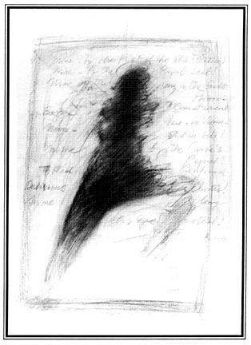
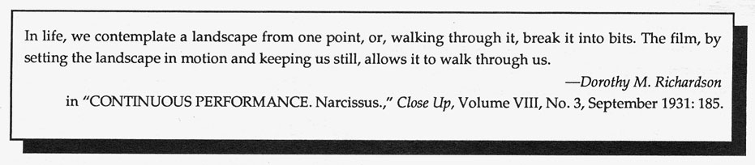
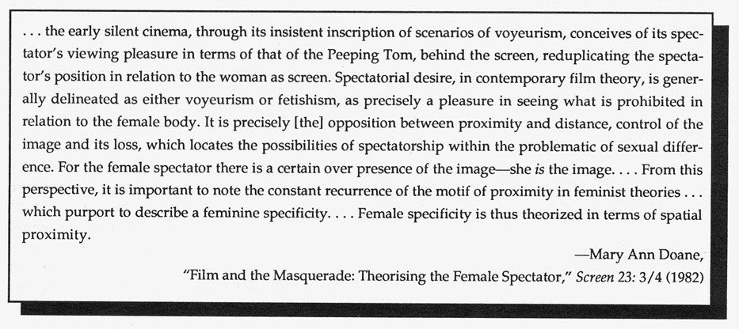

.endnotes
Editor's Notes:
What is this urgency toward the hieroglyphic--to say, to gesture at--that leaves this issue riddled with "multiple meaning ideograms?" If, as Doane suggests, "It is precisely the opposition between proximity and distance, control of the image and its loss. . . " which makes spectatorship gendered; and if, as she also suggests, "For the female spectator there is a certain over-presence of the image--she is the image. . ."--then spatial proximity to the screen, to the page, is everything. The emphasis on place, placement, in this work is consistent. An idea as a pattern or plan or place: using the space on the page as a camera uses light--as punctuation and abbreviation. She is not the screen, or on it, she is between what Eisenstein calls "the syntax of inner speech" and that of "uttered speech." The work in this issue insists that we dissemble words and read the alphabet as a series of caught acts--each letter a carved abbreviation, a taking of place.

 •
•

Our graphic designer, George Mattingly, tells us that librarians until recently categorized small press publications as "fugitive publications". . . .Many new fugitive books have arrived this spring, including:
Daphne Marlatt's A N A Historic, A Novel, and Betsy Warland's serpent (w)rite, both from Coach House Press, Toronto, Canada; also in, Wendy Mulford's Late Spring Next Year, Loxwood Stoneleigh, 11 Colston Yard, Colston St., Bristol BSI 5BD, UK.
Wendy Mulford tells us to look for a new British magazine, a combination of Reality Studios (ceasing publication at the end of this year) and Street Editions, due out under the Reality Studios Editions imprint and hoping to receive many contributions from women doing experimental work in the U.S. Among many new titles from Burning Deck Press is Elizabeth Robinson's My Name Happens Also. Poetry editor of The Cimarron Review, Nuala Archer, whose work appears in this issue, is looking for experimental writing by women: Department of English, Morill Hall, Stillwater, OK 74078. Nancy Bogen, an associate professor of English at the College of Staten Island of the City University of New York, surveyed the 77 full-length book reviews that appeared in The New York Times Book Review during January, 1987, and found that 57 were written by men and only 19 by women. The New York Review of Books was worse: 42 reviews were by men, and three by women. To improve the image of women as intellectuals--as writers, critics, and academics--Bogen has formed an organization to address these issues. Membership is open to anyone interested: women and men, writers and readers. For more information, contact Bogen at: 31 Jane Street, New York, New York 10014.

 •
•
This is the last issue of Volume IV--which means that now is the perfect time for you to resubscribe. The focus of the next issue of HOW(ever) will be erasure--erasure as formal technique, as subject and in its various connections to women's writing. Postcards and Alerts should be sent to Susan Gevirtz, 1650 Jones Street #4, San Francisco, California 94109. Due to drastic negligence on the part of our printer, some copies of our winter issue had a blank page hidden inside of them. If you received one of these, please send a 9x12 SASE and we will send you a fully printed copy. We will continue the temporary halt on manuscript reading for future issues, due to the abundance of work received, but will resume again in September 1988. At that time, poetry as well as informal critical pieces for Alerts may be sent to Kathleen Fraser, 1936 Leavenworth, San Francisco, California 94133.
 --Susan Gevirtz
--Susan Gevirtz
HOW(ever), ISSN 0895-5-5743, is available in a fourth series of four numbers. For libraries interested in purchasing the complete series, beginning with Vol. I, we have a limited number of archival sets. Archival sets cost $12 per volume for individuals; $15 for institutions. Subscriptions for Vol. IV cost $8 for individuals; $10 for institutions. Individual copies of HOW(ever), often asked for as "sample copies," are available at $2.50 each from Small Press Distribution, 1814 San Pablo, Berkeley, CA 94702. Subscription checks go to HOW(ever), c/o Jaffer, 871 Corbett Ave., San Francisco, California 94131.


go to this issue's table of contents